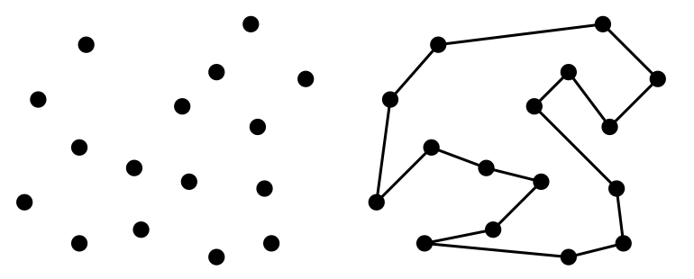

Implemente e submeta uma solução para o problema [DAA 013] Cobertura mínima.
Para efeitos da nota atribuída à resolução de exercícios ao longo do semestre, os exercícios a submeter desta aula são:
Prazo de submissão: 24 de Abril (submeter no Mooshak de DAA)
Não se esqueçam que qualquer ajuda que tenham recebido de outros colegas deve ser reconhecida nos comentário do programa que submetem.
Depois do prazo os problemas continuarão disponíveis no Mooshak, mas as submissões não contarão para a sua nota. Relembre que cada aula vale 10% da nota desta componente.
Para um problema contar tem acertar todos os testes. Mesmo que resolva todos os problemas, o máximo numa aula é de 100%.
Nesta aula iremos abordar conceitos de algoritmos greedy. Será por isso conveniente ver o que foi falado nas teóricas:
Exercício 1) Considere o problema do caixeiro viajante (versão euclideana): dados N pontos no plano, arranjar o ciclo mais curto que visita todos os pontos.

Imagine que começa num ponto qualquer e depois segue uma escolha greedy. Para cada uma das hipóteses a seguir mencionadas, arranje um caso onde a escolha greedy daria uma solução ótima e também um contra exemplo onde essa mesma escolha não daria uma solução ótima.
Exercício 2) Considere o problema do troco: dada um conjunto de moedas S e uma quantia K, descobrir o menor número de moedas de S que somadas dão a quantia K (podendo repetir moedas).
Considere o algoritmo greedy de em cada passo escolher a maior moeda que não faz passar da quantia K.
Implemente e submeta uma solução para o problema [DAA 013] Cobertura mínima.
Use o algoritmo explicado nas aulas teóricas: e vídeo #11 Algoritmos Greedy: Exemplos (de 49m50s até 1h00m42s).
Implemente e submeta uma solução para o problema [DAA 014] O problema do sapateiro.
Qual a escolher greedy a usar?
Este exercício é um extra, e não é considerado essencial no contexto desta aula. Use-o se quiser consolidar os seus conhecimentos num problema um pouco mais complicado, pois implica ser eficiente (para além de correcto).
Implemente e submeta uma solução para o problema [DAA 015] Rebentando os balões.
Para este problemas as dicas estão "escondidas" atrás do botão seguinte (que lhe permite experimentar tentar resolver sem as ler primeiro, se preferir). Além da estratégia greedy, a dificuldade principal aqui é conseguir ser eficiente: como podem existir N=100 mil balões, a solução não pode ser quadrática e tem de ser pelo menos linearítmica, ou seja O(n log n).
Todas as semanas vou colocar disponível pelo menos mais um exercício um pouco mais desafiante.
Para esta semana o desafio é resolver um problema de "nível MIUP" (a Maratona Inter-Universitária de Programação), o concurso de programação mais prestigiado para alunos universitários nacionais. O problema, criado por mim, era um dos mais "complicados" da edição 2019 e está disponível para submissão no Mooshak:
Se já tiverem feito tudo e estiverem "presos" neste, e quiserem mesmo fazer o desafio, podem contactar-me para eu "dosear" as dicas, sabendo que este problema é mais complicado que os outros desta aula.